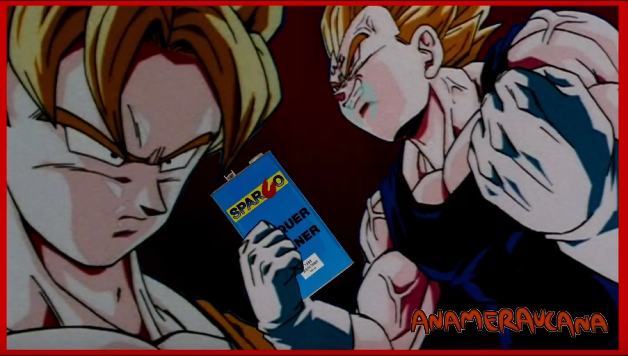
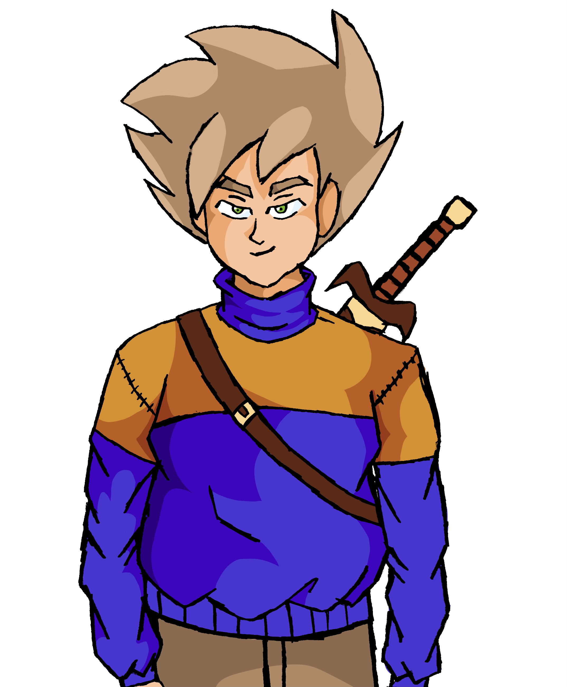
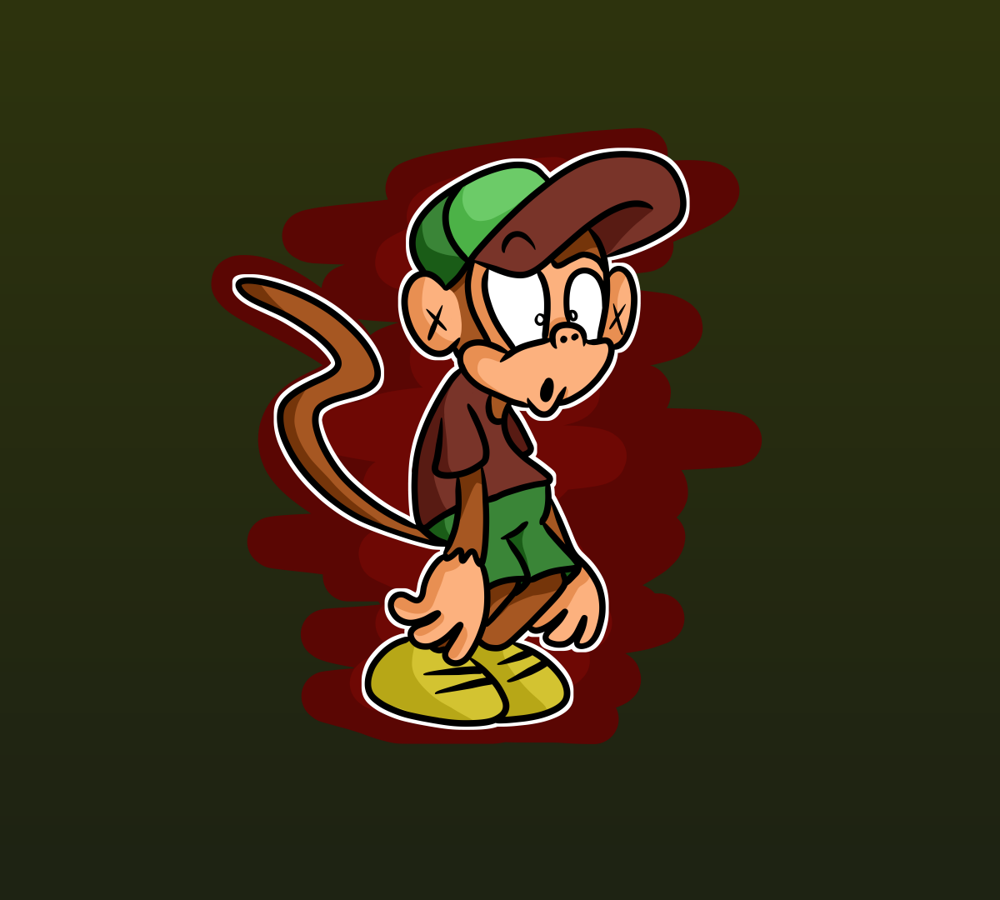

I have quite a few projects going on at the moment. for my voice acting, I've been practicing with making abridged parodies of
Dragon ball Z, however due to the company behind the show, toei animation, being quite
vicious with copywrites, I can't display them directly on this
site, but I can however link the YouTube originals. Keep in mind they can be very crass and vulgar, but people find them funny, so I still make em.
Don't worry!!! this isn't my biggest project, I am also working on concepts for TV shows and a comic, one serialized and one episodic. I don't wanna share
too much, so I'll give a small synopsis of each.
GRAND STAR ODYSSEY
Grand star odyssey is a serialized comic where a young boy learns to gain control over his dormant psychic powers, in order to save his own mother from an evil space tyrant's intergalactic slave trade.
Chase, the protagonist of GSO

Zoocatraz
Zoocatraz is a more comedic episodic series that takes place in a run-down prison like zoo, following the adventures of the animals inside. It's sort of based on shows like Earthworm jim, minus being a video game adaptation
protagonist of Zoocatraz:
